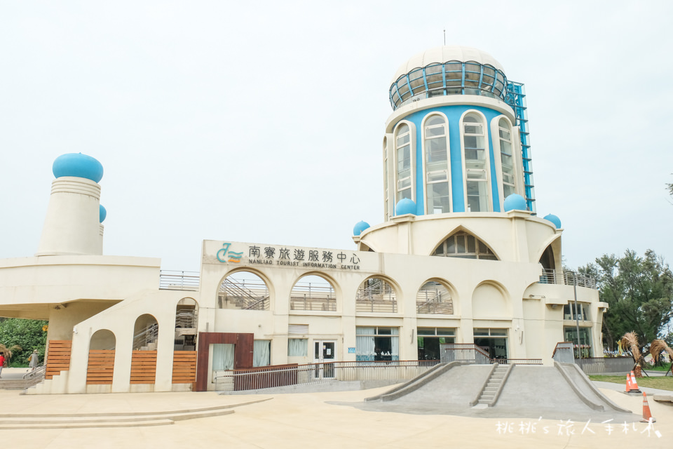
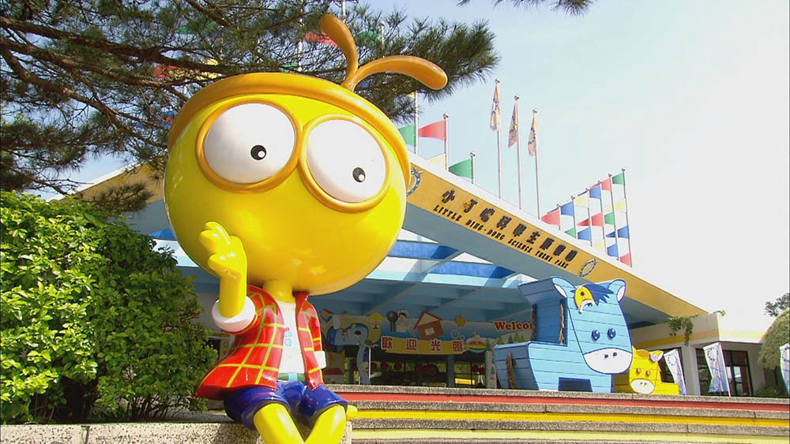
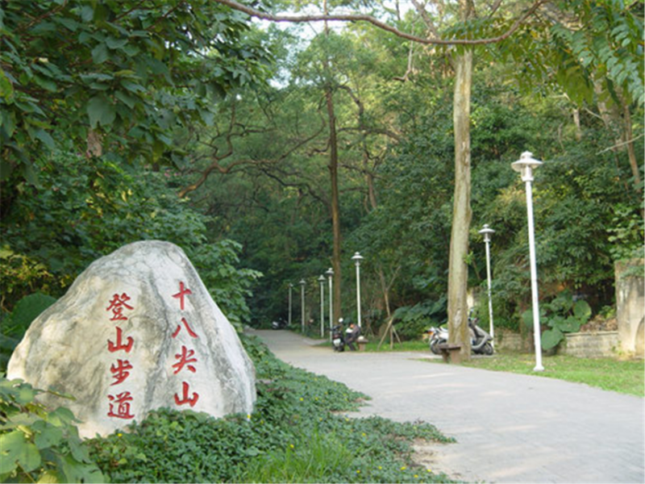

新竹景點

賞蟹步道
建在香山濕地潮間帶的賞蟹步道，夢幻的心型石滬造型步道，吸引超多人過來拍照打卡，彈塗魚、招潮蟹就在你身旁

青青草原
位於新竹香山，最近因為北台灣最長的磨石子溜滑梯而成了熱門景點，更是親子遊的好去處

南寮漁港
為台灣早期頗具規模之港口，近年進行了娛樂漁船碼頭及運動公園工程，為漁港新添一處兼具發展休閒漁業及多元使用的設施

新竹城隍廟
創建於清乾隆13(1748)年，其廟宇規模在當時是全臺之最，廟埕的市集小吃攤，成為新竹特色之一

小叮噹科學主題樂園
樂園一直堅持以科學主題為設計方向，提供給國人另一種渡假知的享受，並成為國民教育自然科學之唯一戶外實驗教室

青草湖
新竹八景之一，四周山林相映，漫步在水岸的環湖步道，幽靜的氣氛與秀麗的湖岸風光，一覽青草湖的風光明媚

十八尖山
由十八個峰頭所組成的丘陵地，位於新竹市的東南郊，約略呈新月形，蜿蜒約7、8公里，屬於都會型的自然森林公園